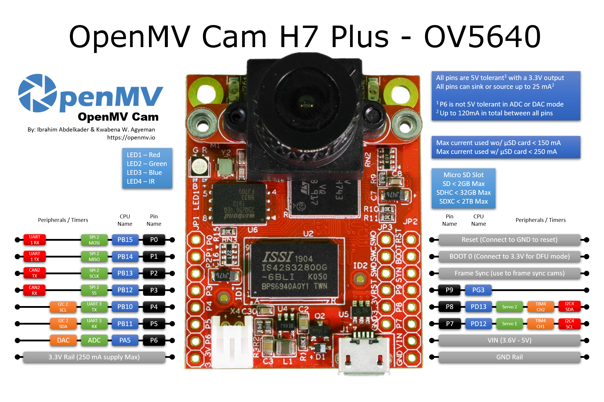
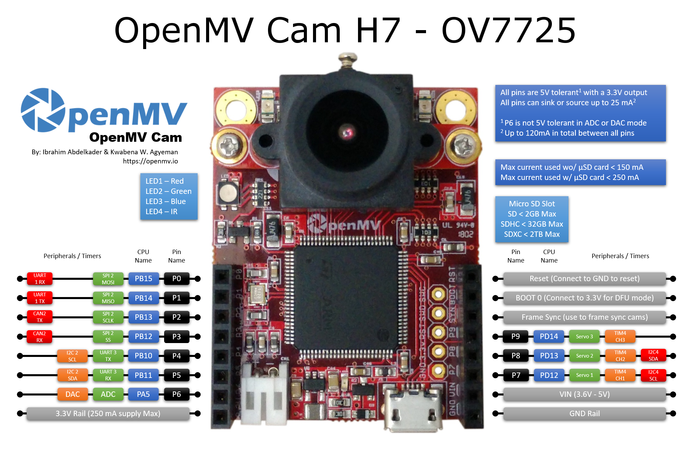
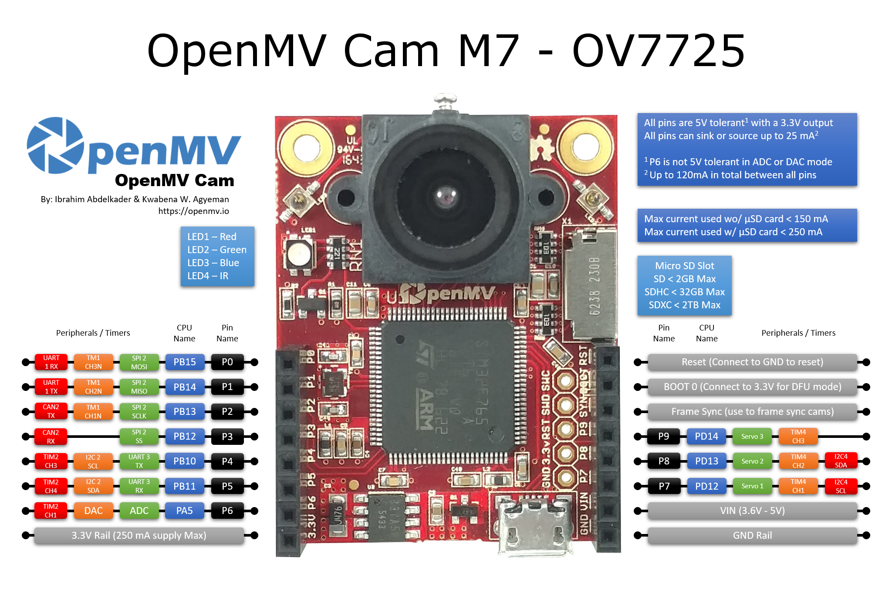
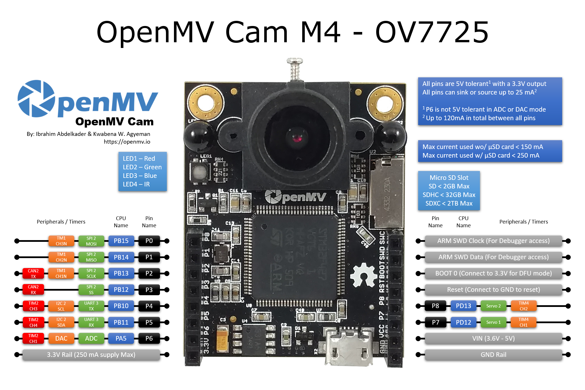
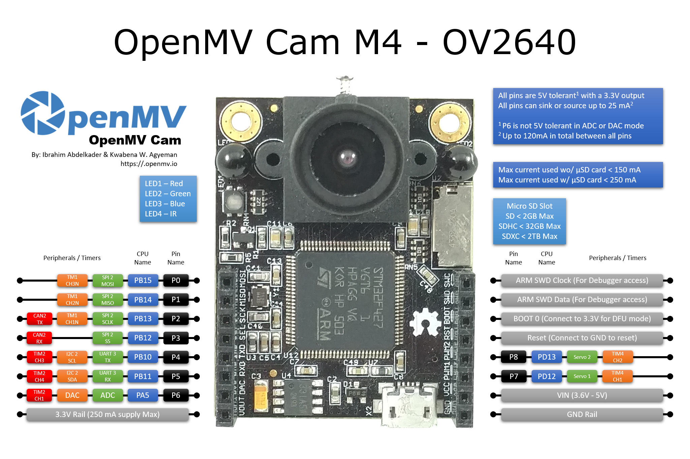

6. I/O Tutorial¶
Before getting into machine vision topics we’re going to talk about I/O pin control on your OpenMV Cam. It’s important you know how to toggle I/O pins, transmit and receive serial data, and put your OpenMV Cam to sleep so that you can create a system that’s able to “sense”, “plan”, and “act” in one package.
First, let’s take a look at your OpenMV Cam’s pinout below:
    {kind=link}
{kind=link}
{kind=link}
{kind=link}
{kind=link}
Depending on the model of your OpenMV Cam you have 9-10 general purpose I/O pins available which can be used for low-speed digital input and output. Note that we use STM32 processors which have 5V tolerant I/O pins so you can hookup your OpenMV Cam directly to an Arduino or other 5V device without worry. The I/O pins are quite beefy too and can source or sink up to 25 mA each.
Anyway, different I/O pins have different special functions. P0-P3, for example, are your OpenMV Cam’s SPI bus pins which you can use to control SPI devices. P4-P5 are your OpenMV Cam’s Asynchronous Serial or I2C bus bins to talk serial or I2C. P6 is your OpenMV Cam’s ADC/DAC pin for 0V to 3.3V input and output. And P7-P8 (or P7-P9) are your OpenMV Cam’s Auxiliary I/O pins.
6.1. The PYB Module¶
All microcontroller I/O functionality is available from the pyb (Python
Board) module. You just need to import pyb in your script to get access to
it. Once imported you’ll have access to the ADC, CAN, DAC, I2C, Pin, Servo, SPI,
and UART classes along with being able to control the board’s power consumption.
Note
The tutorial is not complete at right now. Please see the quick reference and library for more documentation.